Data Intelligence – Governance
Act as a Data Steward to profile data, enrich metadata with AI, assign business terms and data classifications, and enforce masking rules for sensitive PII/SPI fields — all through the watsonx.data Intelligence platform.
1. Introduction
This lab demonstrates how to use watsonx.data Intelligence to profile data, enrich metadata with AI, and enforce data protection rules. You'll act as a Data Steward to create and implement governance artifacts that protect sensitive data and ensure data quality.
What This Lab Demonstrates
- Data Profiling — analyze data structure, types, and content automatically
- AI-Powered Metadata Enrichment — use machine learning to assign business terms and classifications
- Data Quality Assessment — automated quality checks and scoring
- Data Protection — implement masking rules for sensitive information (PII/SPI)
- Catalog Publishing — make governed assets available for consumption
What You'll Learn
- ✅ Profile data to understand structure and content
- ✅ Use AI-powered metadata enrichment
- ✅ Assign business terms and data classifications
- ✅ Configure data quality checks
- ✅ Implement data protection rules (masking)
- ✅ Publish governed assets to a catalog
What You'll Build
- Profiled Data Asset — complete statistical analysis of customer data
- Enriched Metadata — AI-generated descriptions and classifications
- Assigned Business Terms — standardized definitions for data elements
- Data Quality Metrics — automated quality assessments
- Protected Sensitive Data — masking rules for PII/SPI fields
- Published Governed Asset — available in catalog for consumption
Target Audience
| Role | Purpose |
|---|---|
| Data Stewards | Primary audience — create and implement governance artifacts |
| Data Engineers | Technical implementation of governance policies |
| Data Governance Teams | Policy enforcement and oversight |
| Technical Users | Understanding governance mechanics |
2. Prerequisites
- ✅ Completed Getting Started Setup Guide Section 1
- ✅ Completed Data Warehouse Optimization and Data Lakehouse Labs (by instructor or student)
- ✅ Data Governance setup completed by instructor
- ✅ Access to shared watsonx.data Intelligence environment
- ✅ Instructor-provided catalog access
customers_table asset you'll use in the lab.
3. Lab Overview
Lab Workflow
-
1
Open watsonx.data Intelligence Service
Access the watsonx.data Intelligence platform from IBM Cloud
-
2
Create Project
Name:
Data Intelligence Governance FirstInitial+Lastname -
3
Import Connected Asset from Catalog
Import
customers_tablefrom the bootcamp catalog -
4
Profile Data
Analyze data structure and content automatically
-
5
Enrich Data
Review options, create Metadata Enrichment Job, review AI suggestions, assign business terms, and publish to catalog
-
6
Verify Protection
View asset, query in watsonx.data, observe masked fields (Email & SSN)
Relationship to Data Intelligence – Quality
| Aspect | Data Intelligence – Governance (this lab) | Data Quality (companion lab) |
|---|---|---|
| Role | Data Steward | Data Consumer |
| Action | Create & Implement | View & Understand |
| Classifications | Assign PII/SPI labels | Interpret what labels mean |
| Business Terms | Create and assign | Read and use |
| Data Quality | Configure checks | Review scores |
| Data Protection | Implement masking | See masked data |
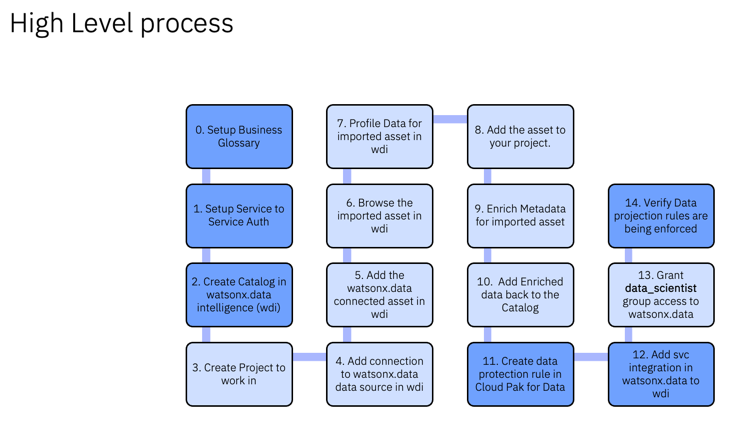
4. Lab Steps
4.1 Open watsonx.data Intelligence Service
- Open a new incognito window
- Log in to https://cloud.ibm.com using the non-admin credentials provided by instructor
- From the IBM Cloud Hamburger menu, select Resource List
- Go to AI/Machine Learning → watsonx.data Intelligence
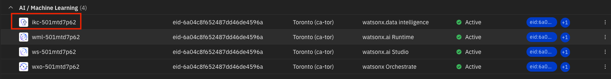
- In the Data Fabric section, click Launch
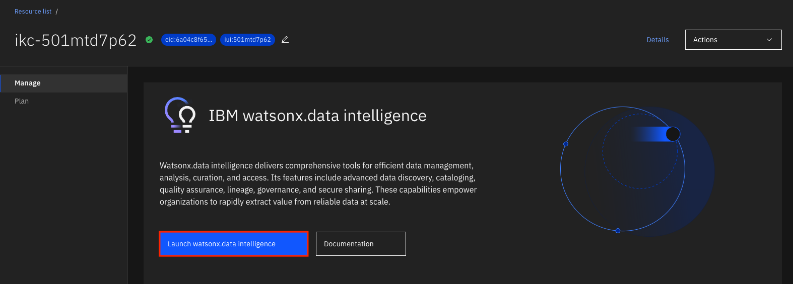
- If prompted for a tour, agree to terms and select Skip for now
4.2 Create a Project
- From the Hamburger menu, select Projects → View all Projects
- Select New Project and configure:
- Name:
Data Intelligence - Governance FirstInitial+Lastname(unique naming is important in the shared environment)
- Name:
- Select your Cloud Object Storage from the list if not selected by default
- Click CreateYou may be asked to create a User API Key if you don't have one — click Create to proceed.
4.3 Import Connected Asset from Catalog
- Within the project, go to the Assets tab → click Import assets
- In the left-hand menu, select Catalog asset → Choose the bootcamp catalog → Data asset → Select the customers table created by the instructor
- Click Import
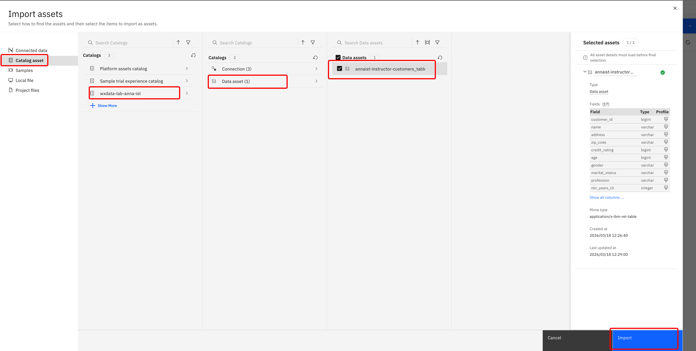
4.4 Browse the Imported Asset
- Select your Data Asset that you just imported
- Notice that you are currently able to view all fields
- On the Profile tab, an overview of data with basic statistics will be automatically created
- The Data Quality tab is currently empty — it will be populated after enrichment
4.5 Profile Data for Imported Asset
Profiling analyzes columns of data assets to understand their structure and content — computing statistics, determining data types and formats, classifying data, and capturing frequency distributions.
- Select the Profile tab and click Update profile to start profiling.
This takes approximately 5–10 minutes. You can perform other tasks in the meantime.
4.6 Enrich Data for Imported Asset
Metadata enrichment uses pre-defined data classes and business terms to automatically assign or suggest enrichment during the metadata enrichment process. This saves organizations significant time by reducing manual effort.
4.6.1 Review Enrichment Options
- Go back to the project by clicking on its name
- Go to the Manage tab → select Metadata enrichment in the left-side menu
- Scroll down to Term assignment methods and make sure the following options are selected:
- Machine learning (ML model assigns terms)
- Data-class-based assignments (terms assigned based on data class for a column)
- Name matching (terms assigned based on similarity between term name and asset/column name)
- Gen AI based term assignment (if available) — available with Trial or Premium SaaS license; uses LLM for domain-specific semantic matching
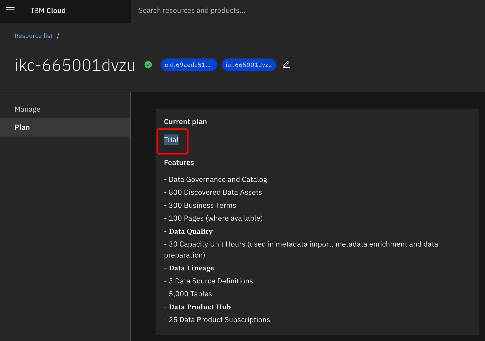
4.6.2 Create Metadata Enrichment Job
- Switch back to the Assets tab
- Select New Asset → Enrich data assets with metadata
- Enter Name:
MDEand select Next - Select Select data from project → Under Asset types, select Data asset and your table → click Select
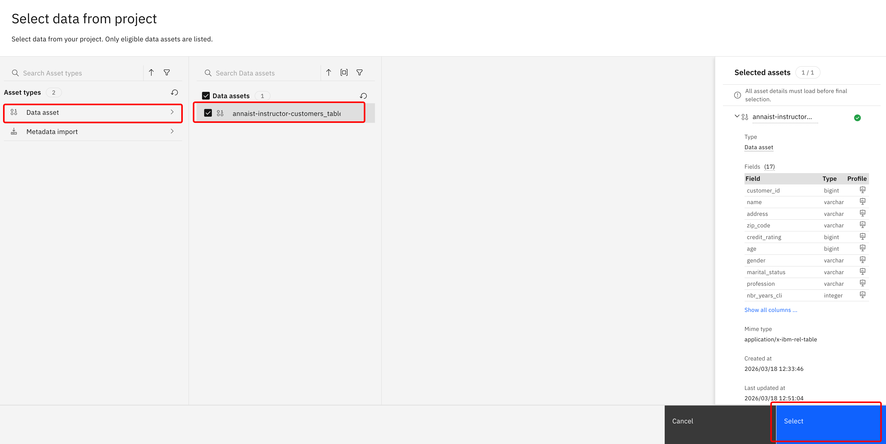
- Confirm your asset is selected and click Next
- Set Enrichment Objectives by enabling all of the following:
- Profile Data
- Expand Metadata
- Assign terms and classifications
- Identify data quality checks
- Run data quality analysis
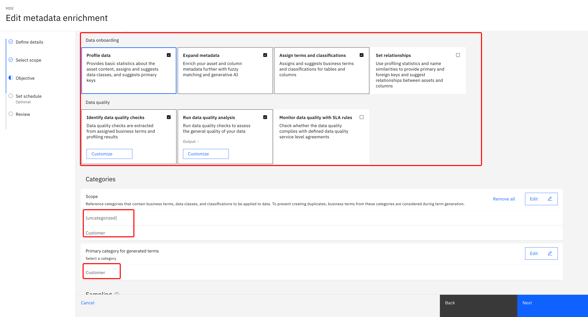
- Scroll down, select Select categories + → Select
[uncategorized]andCustomer→ click Select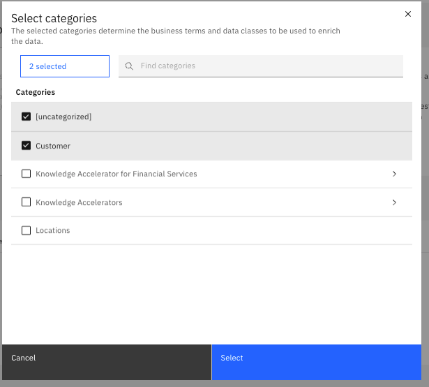
- For Primary category for generated terms, select
Customer - For Sampling, keep the default Basic
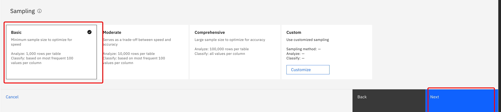
- Schedule the enrichment job and click Next
- Keep the default (run now) and click Next
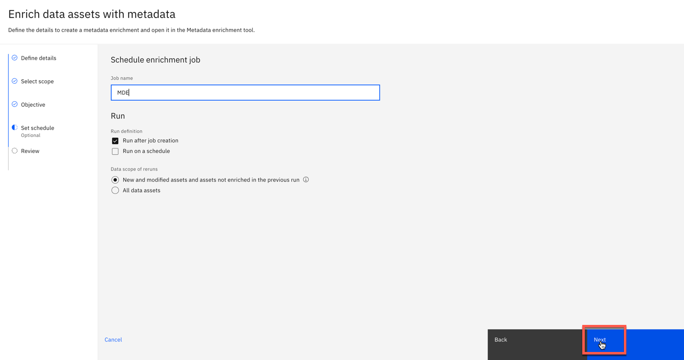
- Enrichment options will be displayed. Select Create to start the job.
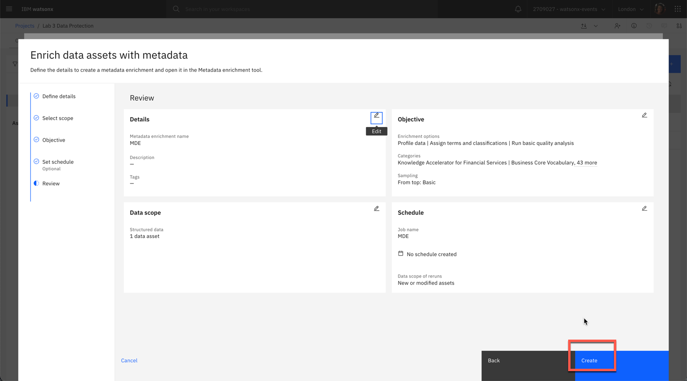
4.6.3 Review Enrichment Results
As the data steward, you will now review the proposed enrichment before publishing it to the catalog.
- From the Assets tab, go to Metadata Enrichment asset
MDE - Go to the Columns tab to see results.
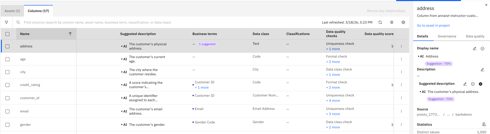
Some metadata is generated using AI; others are assigned from governance artifacts. When confidence thresholds are met, metadata is automatically assigned. When the model fails to meet the threshold, it makes a suggestion (shown in purple). - Click the first column
address:- On the Details tab: see AI-suggested Display name and Description. Click Accept AI suggestion to approve, or click the pencil to edit.
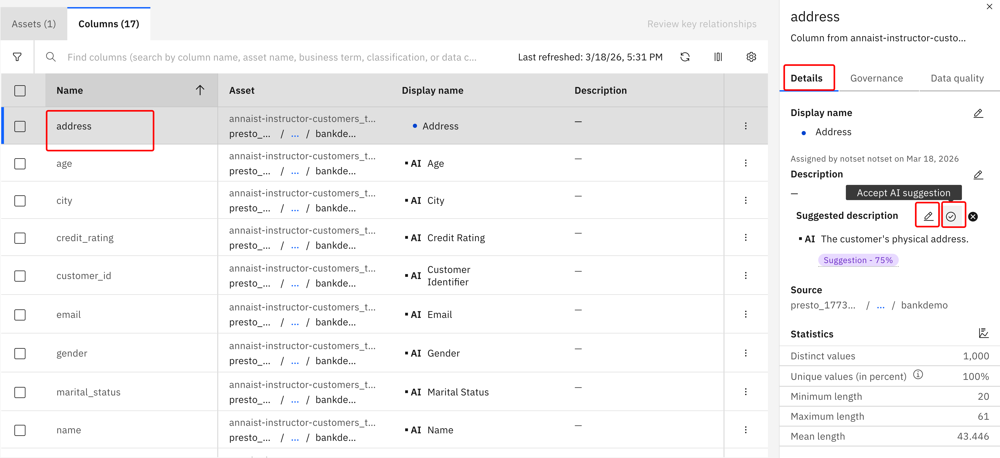
- On the Governance tab: reject the suggested business term
Email. Click+to assign manually → selectAddress→ click Assign.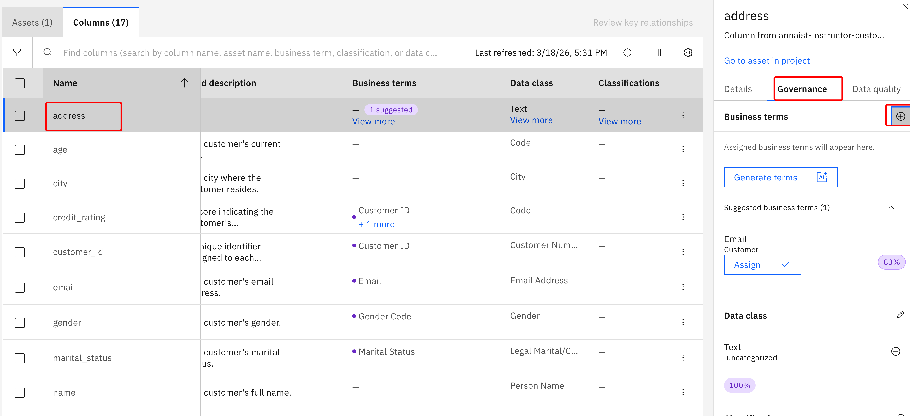
- On the Details tab: see AI-suggested Display name and Description. Click Accept AI suggestion to approve, or click the pencil to edit.
- Click the purple 1 suggested bubble next to
risk_score→ go to the Governance tab → click Assign to accept the suggestion.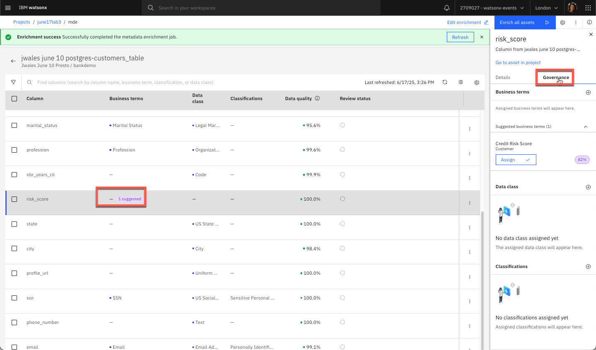
- For the
Addressbusiness term with ambiguity: hover over the business term column forAddress→ select View more → go to the Governance tab → click+→ search foraddress→ selectWork Address→ click Assign.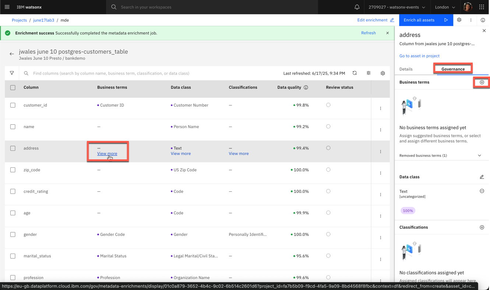
- Review the Data quality tab to see criteria used to calculate the quality score. For the
ssnfield:- Review assigned Business terms and Data Class
- Set to
SSNandUS Social Security Numberif not automatically assigned - Optionally set Classification to
Sensitive Personal Information
- For the
emailfield:- Review assigned Business terms and Data Class
- Set to
EmailandEmail Addressif not automatically assigned - Optionally set Classification to
Personally Identifiable Information
- Scroll to the right to explore available metadata and data quality scores. Click on a score to see how it was evaluated.
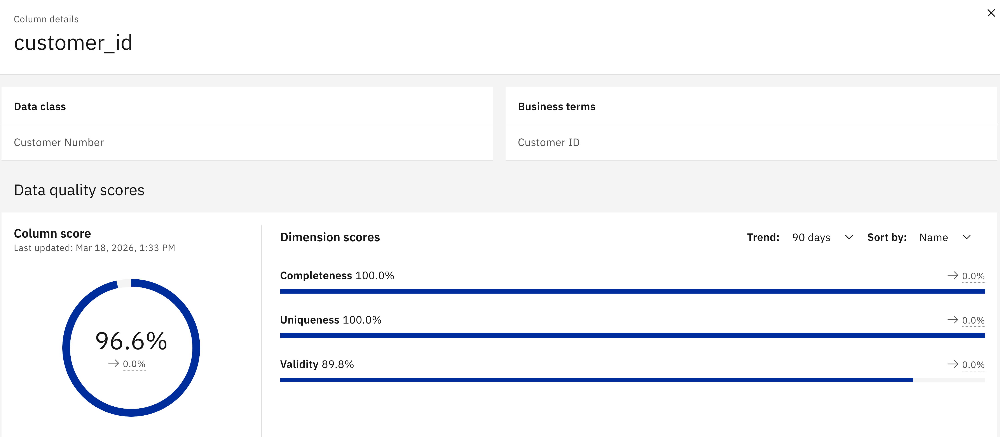
- For fields you have reviewed: click the 3-dots at the right end of the row → select Mark as reviewed
4.6.4 Publish Enriched Data to Catalog (One Volunteer Only)
- Navigate back to the Asset view by clicking on the Asset tab
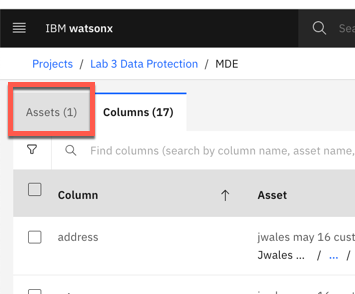
- Select the checkbox next to the data asset and click Publish in the blue bar
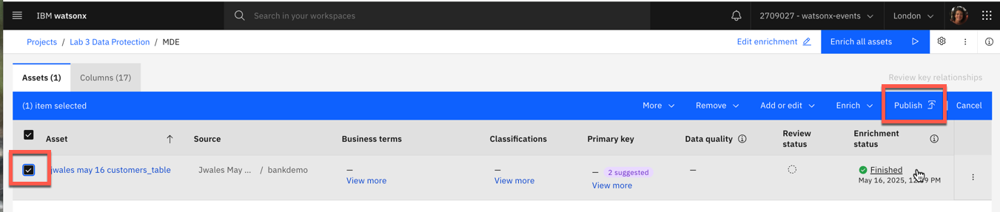
- Select the bootcamp catalog and click Next
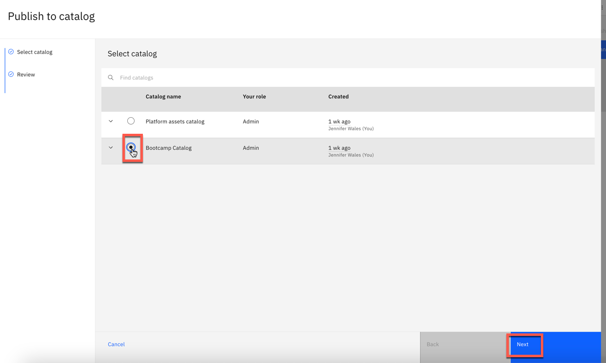
- On the Review Assets page, click Publish. This takes a few minutes. Wait for "Request to publish assets completed".
After publishing, the catalog will show updated metadata and governance artifacts for the selected asset.
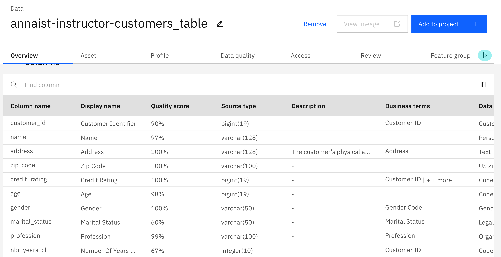
5. Verify Data Protection
5.1 Verify Data Protection Rule is Being Enforced (Students)
To verify the rule is working, use a non-admin user account (any user in the Techzone resource group aside from the instructor account).
- Make sure you are in the watsonx.data instance account
- Go to the watsonx.data Intelligence instance
- Open the Bootcamp Catalog
- Open the data asset from watsonx.data and click the Asset tab

- In another window, go to the watsonx.data instance (Resource List → Databases → watsonx.data → Open web console)
- Go to Query Workspace → navigate to
postgres_catalog → bankdemo → customers_table→ generate a Select Statement → run on the Presto engine
- Scroll over to the
emailandssncolumns to observe masking in place:- Email address is masked
- SSN field is masked with different (obfuscated) values

Key Takeaways
✅ AI-Powered Enrichment
AI can accelerate metadata enrichment by up to 80%, reducing manual effort across large datasets.
✅ Data Profiling
Profiling provides complete statistical analysis of data structure, types, and content — essential for governance.
✅ Data Classification
Classify and protect sensitive data (PII/SPI) with automated detection and labeling.
✅ Business Terms
Standardized business terms ensure consistent definitions for data elements across the enterprise.
✅ Data Quality
Automated quality checks measure and report on data trustworthiness at column level.
✅ Data Protection
Masking rules enforce privacy at query time — protecting SSN and email fields without changing source data.
Troubleshooting
Cannot create project
Verify you're logged in to the correct IBM Cloud account (non-admin credentials from instructor).
Enrichment job fails
Check CUH availability — with the Trial license (30 CUH), only 5–6 participants can run enrichment simultaneously. You may need to wait for capacity to free up.
Cannot see catalog
Verify the instructor has granted you access to the bootcamp catalog.
Data protection not working
Ensure data protection rules were configured by the instructor in advance. Confirm you are querying as a non-admin user (admin users own the data and are exempt from masking).
Next Steps
Business Value
This lab demonstrates how organizations can:
- Automate governance with AI (80% time savings)
- Protect sensitive data while maintaining utility
- Standardize data definitions across the enterprise
- Ensure compliance with regulations (GDPR, CCPA, HIPAA)
- Improve data quality and trustworthiness
Important Notes for This Lab
| Topic | Detail |
|---|---|
| Shared Environment | Work in a shared wxi instance — use unique naming: Data Intelligence Governance FirstInitial+Lastname |
| Publishing | Only one participant publishes to the shared catalog — coordinate with instructor |
| Trial License Limit | 30 CUH total — only 5–6 active participants recommended; others observe |
| Pre-configured by Instructor | Bootcamp catalog, governance artifacts, data protection rules, service-to-service authorization |